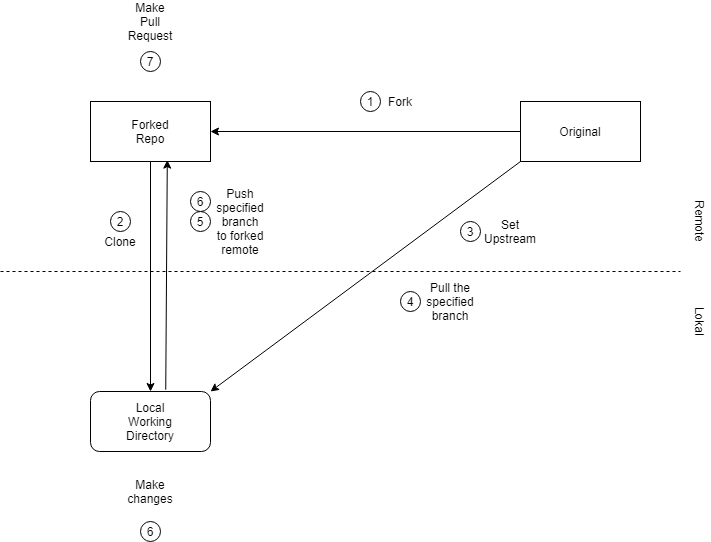

Bu sayfada farklı bir projeye katkı sağlam ile ilkili gereken komutlar listelenmiştir. Sayfa şu an yazarın anlayacağı şekilde hazırlanmış olsa da ihtiyaca göre ek ayrıntılar eklenecektir.
Asıl projeyi Github üzerinden fork et.
Kendi repository'ndeki projeyi aşağıdaki komutla bilgisayarına aktar.
git clone [github-repo-ssh-linki]
Örnek
git clone git@github.com:akrabat/zend-validator.git
Proje indirildikten sonraki git komutları projenin içindeki yolda girilir.
cd proje-adi
Projenin asıl kaynağını göstermek için upstream ekle.
git remote add upstream [asıl-proje-ssh-linki]
Değişikliklere başlamadan orijinal sürümü lokale ve fork edilmiş remote projeye aktar.
git pull upstream master && git push origin master
...
...
Değişiklikler yapıldıktan sonra
git add .
git commit -m "açıklama"
git push origin master
Bu aşama sonrasında githubta create pull request üzerinden katkı isteği yapılabilir.